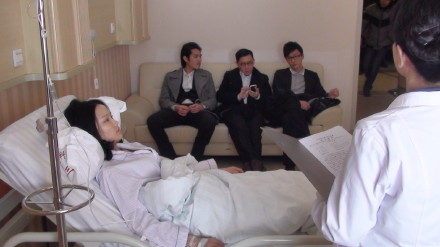
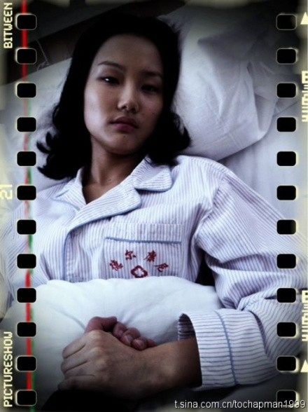
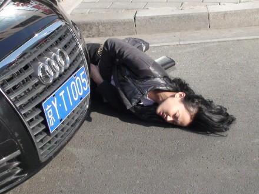
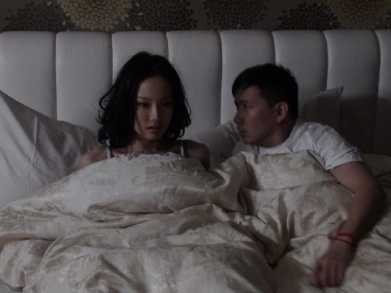
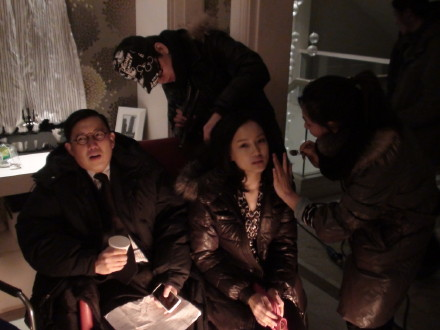
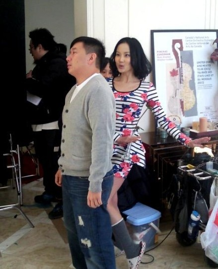
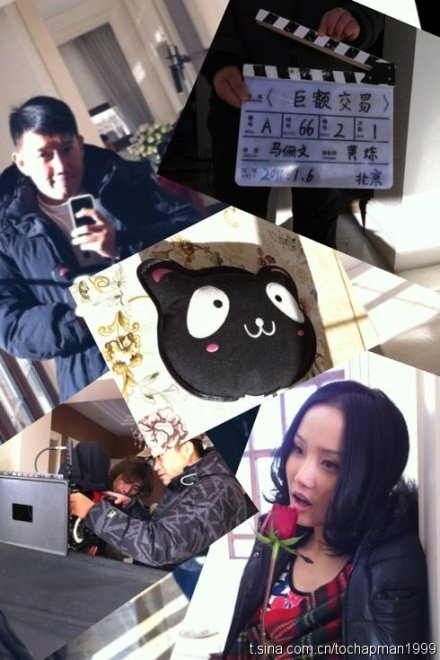

本命年第一笔交易《巨额交易》，在剧中饰演的角色叫-小艾，今天我的戏份全部杀青了，短短四日的拍摄就和大家分开，真舍不得啊，写些什么呢？肚子里有好多话，但是不知道怎么表达，此时刚收工的杜老师说："你就x写导演和我说的，你演的很好"
谢谢马俪文-马导大美女，没见过我本人，也没有通过任何电话，只是看了我的一期节目，说我就是-小艾，在几位投资方对我演戏经验次数和能力质疑的压力下任然坚持要我来演这个角色。万分荣欣能够受到她邀请，不过压力也不小，真要感谢我家人般的工作人员陪我一起做足功课，台词什么的都一边又一边的陪预演，才让我在进组时和剧里的老公杜汶泽先生对戏淡定自如，和那么有经验的好演员对手真是有福，杜老师的敬业和对我的关照就不用说了，除了好就是好。最有趣的就是我们俩拍摄所有的对手戏几乎都不知道对方在说什么，因为我们都用了自己最习惯的语种，广东话和上海话，马导非常认可我们用母语演戏时擦出的火花。韩彩英和蓝正龙也用了他们最习惯的语种，韩语和台腔国语，他俩应该也不太确定对方在说什么。还是马导最厉害，她知道我们在说什么，因为每一条拍完她都非常肯定地说：很好！过！
因此我和杜老师觉得不够过瘾，我们一有空就互相交流各自擅长的语言，杜老师最感兴趣的就一句骂人的上海话，哈，他居然用手机把我教他的录下来，练习了一个晚上并将其背诵如流，第二天特来经我认可后用很可爱的表情向马导大喊那句......，马导应该是被杜老师的喜感乐到，一定不知道她在说什么，因为马导反应是哈哈哈大笑的说：你太逗了...
其实我们剧组的每一个工作人员都很有喜感很会自娱自乐，虽然天气真的很冷，但是他们都很会解寒，唱歌的唱歌，跳舞的跳舞，还有自言自语的...在这样的剧组真是再冷都觉得温暖和快乐。
昨日下午拍摄最后一场哭戏，流了不少眼泪，眼泪里包含更多是对大家的不舍得，虽是短短四天，真的非常非常感谢剧组每一个人从导演，杜老师，摄影师，副导演，化发，服装，道具，司机，管饭的师傅...谢谢你们对我的照顾和帮助...我先杀青，你们还将继续奋斗到过年后...我会一直关注着你们...






